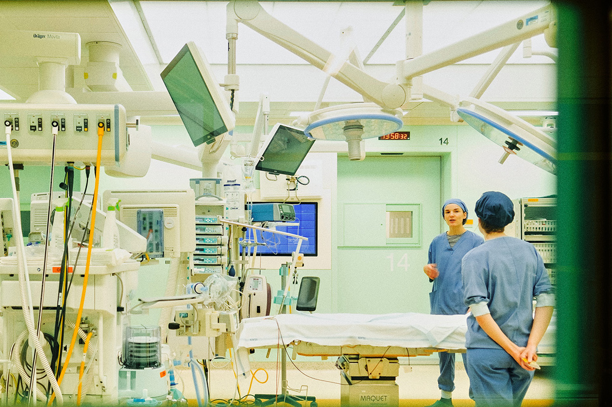

The Care Cycle
Short film showing at Dutch Design Week 2025
Gowns made far away are worn for a moment, disposed after a single use. But what is thrown away, does not go away. It moves, it accumulates, it stays with us. Leaving harmful residues of plastic and toxic chemicals, drifting into air and seeping into earth, rivers, and bodies.
In the Netherlands, healthcare accounts for 7% of total GHG emmissions. The Care Cycle is a short film that highlights the environmental impact of healthcare. Specifically, the film follows the life cycle of a surgical gown. Through observational imagery and a poetic voiceover, The Care Cycle traces the geographies of materials across manufacturing, use, and disposal, refiguring the hospital as embedded in planetary systems.
Produced in collaboration with the Centre for Sustainable Healthcare at Amsterdam UMC, the project contributes to broader efforts to embed environmental accountability within healthcare and systems design. The Care Cycle will premiere with a video installation and screening in United Cowboys, Eindhoven, during Dutch Design Week, October 19-26 2025.
Production and Concept Lead: Lucy Sabin
Filmmakers and Designers: Leidy Karina Gómez Montoya and Eleni Vrettakou
Collaborating Scientist: Florine de Haes